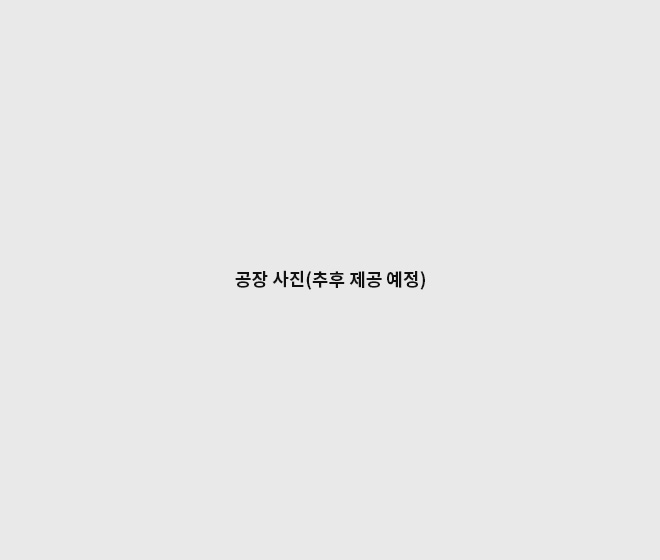

BUSINESS
세계를 선도하는 토종 국산 첨단정밀화학재료 특화기업
공장
공장소개
씨엠디엘 천안공장은 2013년 6월에 완공되었으며
시장 진입 장벽이 높은 전자재료(OLED 소재)를 전문적으로 생산 공급하고 있습니다.
전용 면적 7300m3의 부지에 합성동과 승화정제동으로 구분되며, 설비는 0.3m3 ~ 6m3의 SUS 및 G/L
반응기 15기를 갖추고 있으며 합성품 기준 4톤/월 규모로 생산 가능합니다. 생산 Capa.를 증가시키기 위해 지속적으로 설비투자를 하고 있습니다.
생산공정
-
01
반응 공정
원료 투입하여 최적의 반응 온도와
시간 설정 / HPLC, GC 모니터링 -
02
여과 및 정제공정
고상 제품을 고순도화하기
위한 화학 정제 -
03
건조 공정
고상 제품에 남아있는 유기용제 및 수분을
제거하기 위해 온수 가열 방식 진공 건조 -
04
승화정제 공정
제품에 남아있는 미량의
수분 제거와 초고순도화